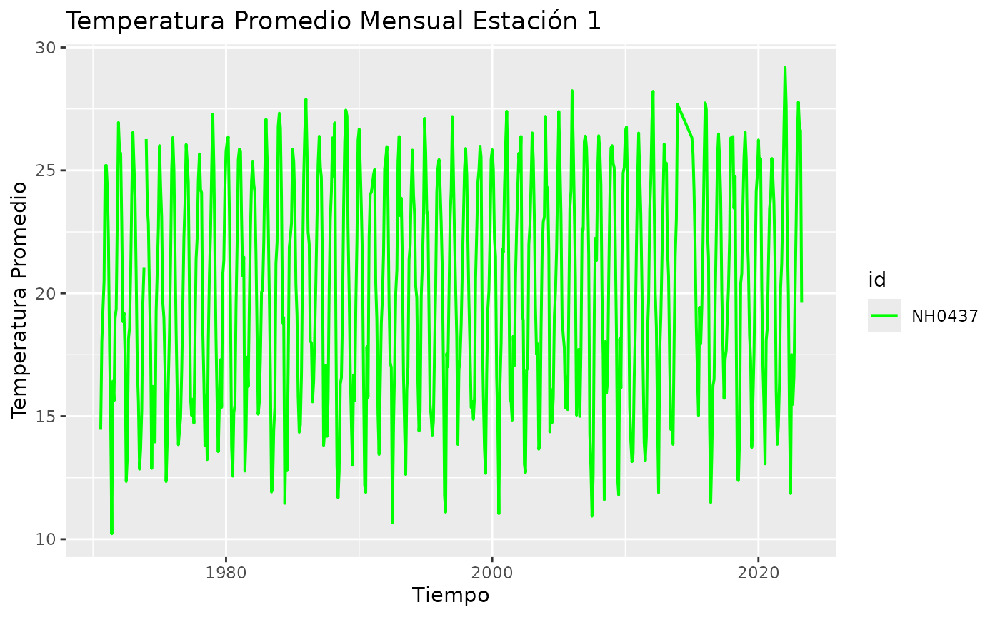
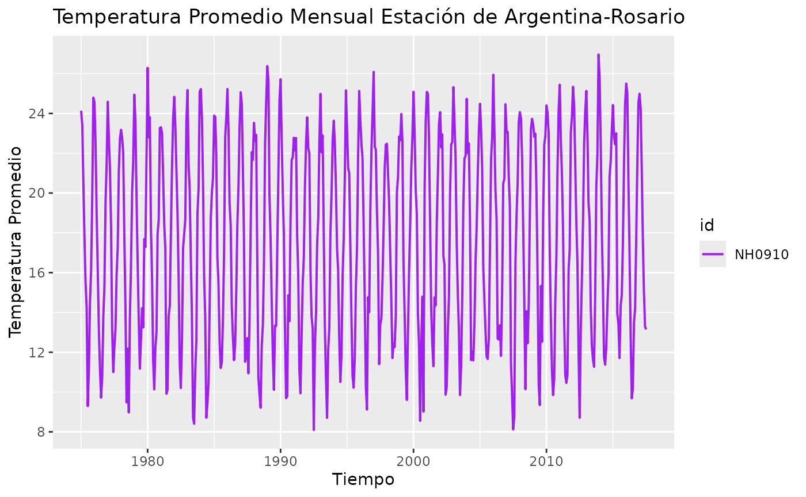

Introducción al paquete paquetemeteorologico
El paquete paquetemeteorologico proporciona herramientas
para la lectura,manipulacion y visualizacion de los datos de estaciones
meteorológicas. En esta introducción, exploraremos algunas de las
funcionalidades basicas del paquete.
Descarga y lectura de datos meteorológicos
El paquete incluye funciones para descargar y leer datos de
estaciones meteorológicas A continuación, se muestra un ejemplo de cómo
descargar y leer datos meteorológicos utilizando la función
leer_estaciones().
# Ejemplo de cómo descargar y leer datos de una estación
estacion_1 <- leer_estaciones("NH0437", ruta_temp1)
#> El archivo no existe en la ruta indicada. Descargando...
#> Descarga completada.
#> Warning: One or more parsing issues, call `problems()` on your data frame for details,
#> e.g.:
#> dat <- vroom(...)
#> problems(dat)
#> Rows: 18929 Columns: 35
#> ── Column specification ────────────────────────────────────────────────────────
#> Delimiter: ","
#> chr (2): id, direccion_viento_1000cm
#> dbl (22): temperatura_abrigo_150cm, temperatura_abrigo_150cm_maxima, temper...
#> lgl (10): temperatura_suelo_10cm_media, temperatura_inte_5cm, temperatura_i...
#> date (1): fecha
#>
#> ℹ Use `spec()` to retrieve the full column specification for this data.
#> ℹ Specify the column types or set `show_col_types = FALSE` to quiet this message.
#> Lectura completada. El dataset tiene 18929 filas y 35 columnas.
estacion_2 <- leer_estaciones("NH0910", ruta_temp2)
#> El archivo no existe en la ruta indicada. Descargando...
#> Descarga completada.
#> Rows: 15553 Columns: 35
#> ── Column specification ────────────────────────────────────────────────────────
#> Delimiter: ","
#> chr (1): id
#> dbl (5): temperatura_abrigo_150cm, temperatura_abrigo_150cm_maxima, temper...
#> lgl (28): temperatura_intemperie_5cm_minima, temperatura_intemperie_50cm_mi...
#> date (1): fecha
#>
#> ℹ Use `spec()` to retrieve the full column specification for this data.
#> ℹ Specify the column types or set `show_col_types = FALSE` to quiet this message.
#> Lectura completada. El dataset tiene 15553 filas y 35 columnas.Resumen y análisis de datos
El paquete también ofrece funciones para resumir datos
meteorológicos. A continuación, se muestra un ejemplo de como crear un
resumen de la temperatura promedio mensual utilizando la función
tabla_resumen_temperatura().
# Crear un resumen de la temperatura promedio mensual para las estaciones leidas
tabla_resumen_temperatura(estacion_1) |>
knitr::kable(caption = "Resumen de temperatura promedio mensual")| id | Max | Min | Promedio | Desvio_Estandar |
|---|---|---|---|---|
| NH0437 | 36.3 | 2.1 | 20.23105 | 5.77252 |
Visualización de la temperatura mensual
El paquete también ofrece funciones para visualizar datos
meteorológicos. A continuación, se muestra un ejemplo de como graficar
la temperatura mensual utilizando la función
graficar_temperatura_mensual().
# Graficar la temperatura mensual de una estacion específica
graficar_temperatura_mensual(estacion_1,c("green", "blue", "red","yellow","purple"),"Temperatura Promedio Mensual Estación 1")
#> Warning: Using `size` aesthetic for lines was deprecated in ggplot2 3.4.0.
#> ℹ Please use `linewidth` instead.
#> ℹ The deprecated feature was likely used in the paquetemeteorologico package.
#> Please report the issue at
#> <https://github.com/Martin-ia-pro/paquetemeteorologico/issues>.
#> This warning is displayed once every 8 hours.
#> Call `lifecycle::last_lifecycle_warnings()` to see where this warning was
#> generated.
graficar_temperatura_mensual(estacion_2,c("purple", "pink", "lightblue","orange","brown"),"Temperatura Promedio Mensual Estación de Argentina-Rosario")